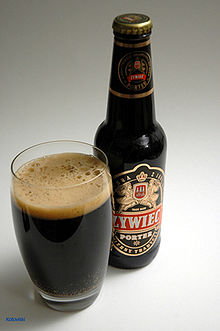

La Negra
Sus Orígenes
La cerveza negra es una bebida de fermentación baja, color oscuro y sabor fuerte que se elabora a partir de levadura lager. Se trata de una bebida alcohólica (suele rondar el 5% de su volumen) que se elabora desde la Edad Media. Su origen se localiza en las zonas de Sajonia y Turinga, en el este de Alemania. De hecho, la primera referencia documentada data del año 1543 en Turinga. Aquí se hablaba de una cerveza negra muy popular conocida con el nombre de Köstritzer, que se sigue produciendo en la actualidad. Su color se debe al uso de maltas de tonos tostados u oscuros durante su proceso de elaboración. Un trabajo en el que se emplean, además, lúpulos amargos que le ofrecen su sabor característico, que recuerda al chocolate y al café.
Caracteristicas
Las Schwarzbiers son cervezas de fermentación baja (lager), aunque originalmente se usaba levadura de fermentación alta para elaborarlas. El contenido alcohólico suele estar entre el 4,8 y el 5 %. Obtienen su color oscuro del uso de maltas especialmente oscuras durante su elaboración. La malta obtiene a su vez el color durante el procedimiento de tueste. Las cervezas oscuras son algunas de las originalmente elaboradas, siendo posible obtener colores más claros gracias a maltas tostadas más ligera y brevemente, desde hace aproximadamente 150 años. En el este de Alemania hay muchas variedades únicas de este estilo, procedentes de cerveceras locales. Se sirve a menudo con trozos de pan negro con queso crema. También combina bien con carnes marinadas como la falda, y es un excelente acompañamiento del Sauerbraten alemán.
Algunos Tipos de Cerveza Negra
Porter
La cerveza artesanal de tipo Porter es, sin duda alguna, una de las preferidas en el mundo entero a la hora de inclinarse por una buena cerveza negra. Sus aromas malteados toman por asalto esta exquisita variedad. El amargor del lúpulo, conjuntamente con su color oscuramente penetrante, terminan por conjugar este maravilloso tipo de cerveza. ¿Ya la has probado?, la porter es una de las más escogidas a la hora de saborear una exquisita cerveza negra. Corresponde al tipo de cervezas ale, su aroma es predominantemente malteado y su sabor se destaca por la amargura del lúpulo. Obviamente, su coloración es robustamente oscura.
Cream Stout
La variedad de cerveza stout apodada cream, tiene su asidero en que, muchas veces, se emplea lactosa a la hora de su producción, provocando en el resultado final una consistencia ligeramente cremosa (principalmente en la espuma) y un sabor tirando a dulce. Su graduación alcohólica suele oscilar entre los 5 y los 8 grados de alcohol. Su color es oscuro, pero sin llegar a los límites de una porter o una imperial stout. En su sabor se percibe un dejo a chocolate y la suntuosidad de la espuma es materia inconfundible. Sin duda alguna, la cream stout es una de las mejores opciones a la hora de decantarte por una cerveza negra. Entre los modelos más aclamados de cream stout, se encuentran la de Bells y, por supuesto, la creadora Boston Brew Company, aunque actualmente muchos elaboradores artesanales están empezando a realizarla.
Bock
Son cervezas elaboradas sólo con malta, de mucho cuerpo pero suaves. Se dice que procede de la ciudad alemana de Einbeck (en aleman se pronuncia Ein-bock), y es probable que su nombre derive de ella. Su largo periodo de maduración produce un sabor limpio y chispeante, por lo general con matices de chocolate. Se utiliza una pequeña cantidad de lúpulo para contrarrestar la malta, pero no para dar sabor. Algunas bocks mas densas , de más cuerpo, se utilizan como cervezas de postre. Las americanas, de Wisconsin, no son tan fuertes como las alemanas originales. Las tradicionales tienen el dulzor de la malta, un cuerpo de medio a denso y su color oscila del pardo dorado al oscuro. La Doppelbock es más fuerte que la normal y tiene un sabor y un aroma de malta más intenso. La Eisbock (o bock de hielo) tiene un mayor contenido alcohólico que la doppelbock y se fabrica congelando esta última y extrayendo el agua helada para que tenga un mayor porcentaje de alcohol. Las Hellesbock y Maibock son cervezas de cuerpo medio, con menos sabor a malta, achocolatadas y más amargas, debido al lúpulo .